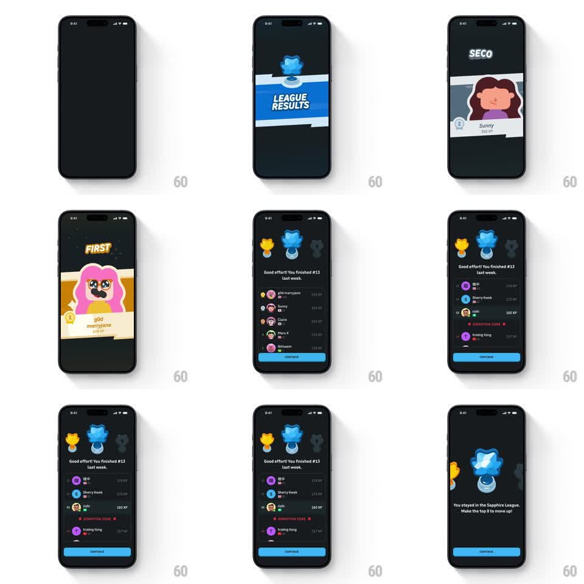

Media
Frame-by-frame

Rebuild this animation sequence 1:1: Duolingo's weekly league results - a "LEAGUE RESULTS" banner pops in, rank cards reveal the top learners with confetti, and the leaderboard list builds row by row under a trophy trio before the stay/promote verdict lands.

Rebuild this animation sequence 1:1: Duolingo's weekly league results - a "LEAGUE RESULTS" banner pops in, rank cards reveal the top learners with confetti, and the leaderboard list builds row by row under a trophy trio before the stay/promote verdict lands.
## Integration
Integration: stack-agnostic spec - springs given as stiffness/damping, timed motions as duration + curve; map every value to your framework and animation library of choice.
## Scene
Dark navy sequence over several beats: "LEAGUE RESULTS" banner card with the blue league star; big rank cards ("FIRST" - god marryjane 428 XP, "SECOND" - Sunny 365 XP) with character art; then the leaderboard - three trophies (gold, blue, grey) above "Good effort! You finished #13 last week." with XP rows, a red DEMOTION ZONE divider, and a blue Continue button; final verdict screen: trophy trio and "You stayed in the Sapphire League. Make the top 8 to move up!"
## Motion spec
Pattern: staged celebration sequence - banner pop, rank-card reveal, staggered list build.
- The banner card springs in from below (scale 0.7 -> 1 with a 5-degree wobble, spring ~280/14); the league star drops onto it (translateY -40 -> 0, 300ms) with a soft bounce.
- Rank cards enter one at a time: a white card slams in (scale 1.15 -> 1, 200ms, ease-out), the rank word ("SECOND"/"FIRST") punches in with a confetti burst (10-14 particles, 500ms, gravity falloff), avatar fades in 100ms later.
- The leaderboard builds upward: trophies pop in order gold-blue-grey (100ms stagger, scale overshoot 1.2), rows slide up 20px and fade with 60ms stagger, the demotion divider draws its dashed line last.
- The verdict screen: the center trophy lifts and tilts (rotateZ -6 -> 0 degrees, spring) while the verdict copy fades up under it.
## Calibration
- Every beat is snappy and a little silly - overshoots, wobbles, confetti; nothing linear longer than 300ms except list stagger.
- Confetti is sparse and square, Duolingo-flat, not realistic paper.
## Reduced motion
Cards and rows fade in place (200ms each); confetti reduced to a single sparkle; no wobble.
## Don't miss
- The user's own row (#13, highlighted) gets a subtle scale pulse when the list finishes building.
- The Continue button is present but static until the final beat.